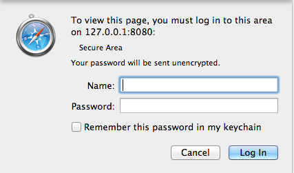
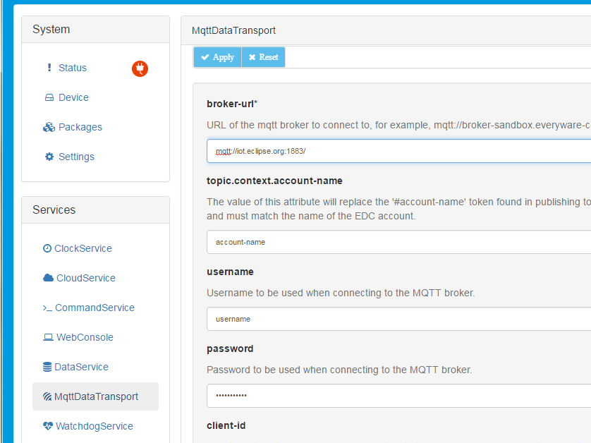

Cloud Configuration
Overview
Eclipse IoT-e offers Data Services, where store and forward functionality for the telemetry data is collected by the gateway and published to remote servers. Eclipse Paho and its MQTT (MQ Telemetry Transport) client provide the default-messaging library used. Designed for constrained devices and low-bandwidth, high-latency or unreliable networks, MQTT’s publish/subscribe, lightweight messaging protocol, minimizes network bandwidth and device resource requirements while also attempting to ensure reliability and delivery assurance in M2M / IoT solutions.
IoT-e also offers Cloud Services with an easy-to-use API layer for the M2M application to communicate with a remote server. In addition to simple publish/subscribe, the Cloud Service API simplifies the implementation of more complex interaction flows like request/response or remote resource management. It allows for a single connection to a remote server to be shared across more than one application in the gateway providing the necessary topic partitioning.
This section provides information on how to connect your IoT-e-enabled device to an MQTT broker-url, which handles receiving published messages and sending them on to clients who have subscribed.
Prerequisites
-
Requires IoT-e development environment set-up (Setting up IoT-e Development Environment)
-
Implements the use of IoT-e web user-interface (UI)
Connecting to the Cloud
With the Eclipse IoT-e development environment set up, you can:
-
Configure a physical device running IoT-e to connect to the Cloud
Run IoT-e on a Remote Target Device
IoT-e is designed to start automatically on remote target devices. With it preinstalled, simply power-on the device and wait for it to fully boot. Once the device is up and running, connect to it with a browser at http://ip_address, where “ip_address” should be replaced by the IP address of the device.
Configuring the Cloud Service
Once connected to the IoT-e web UI, a log in window appears prompting you to enter the Name and Password as shown below:

Enter the appropriate name and password (default is admin/admin) and click Log in. The IoT-e Admin web UI appears as shown below:
To configure the Cloud credentials, click MqttDataTransport in the Services area on the left side of the browser window. The IoT-e web UI displays the MQTT connection parameters and allows you to configure them as needed (shown below).

Configure the Cloud credentials as needed. The most pertinent fields include:
| Field | |
|---|---|
| broker-url: | The url for the MQTT broker (this example shows the MQTT broker-url mqtt://iot.eclipse.org:1883/ hosted by the Eclipse Foundation) |
| topic.context.account-name: | Your [account_name] |
| username: | Typically [account_name]_broker |
| password: | The password for your user |
Once these credentials are set, click the Apply button near the top left of the configuration pane.
Now that the account credentials are set in the MqttDataTransport service, the DataService needs to be configured to connect by default. To do so, click DataService in the Services area on the left of the browser window. For the ‘connect.auto-on-startup’ parameter, select true as shown below:

Click Apply. At this point, the MQTT client in IoT-e is configured to automatically connect to the Cloud.